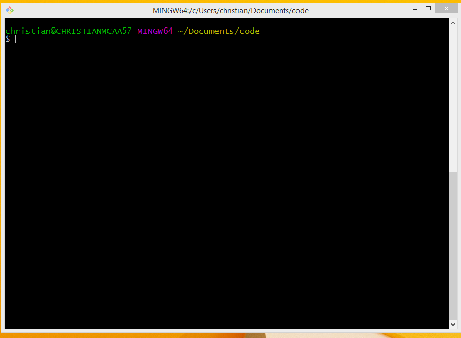

1 Terminal
Terminal (Mac) and Git Bash (Windows) are programs that can run a shell, which is a text-based user interface where you type commands that your computer understands.
Developers use a shell to issue commands to their computer to do things, like to install programs, change what folder their are in, etc. Using a terminal program to use your computer can be confusing at first, but it will become second-nature as you progress through this class.
The shell programming language we will use for these text-based interactions is called Bash. Bash is a Unix-based program and most of the Internet runs on Unix (or Linux) computers.
Windows doesn’t understand Bash at all without the help of another program. This is why we installed Git and Git Bash so we can all speak the same language. (If you are a Windows user and haven’t yet installed Git, do it now.)
Macs understand Bash natively, but some day they will change to a similar language called zsh. When you launch a shell on newer Macs you might get a message The default interactive shell is now zsh. To update your account to use zsh, please run chsh -s /bin/zsh. DON’T DO THIS! JUST IGNORE IT. We will continue to use Bash. Later we will add a command to disable this message. If somehow your terminal gets set to use zsh, you can check and/or change it to Bash.
1.1 Launch your terminal
- For Macs you can use your Launchpad and type in Terminal and launch it. Or you can use the Spotlight search to find it.
Once you launch it will look like this:
Though it may have a white screen.
- For Windows you can go to your Start menu and type in Git Bash and launch it.
It will look like this:

1.2 The terminal prompt
Before I adjusted it, I would see this when I launched my terminal:
COMM-A54338:~ ccm346$- The first part before the
~is my computer name. - The part after the
~is is my username. - Lastly we have the
$. This is the “prompt” where you type commands. You type your commands AFTER the $ and then hit Return on your keyboard to execute them.
In this book you might see examples of a command that includes an output. That first line will have the $ before the command so you know that it is a command, but DON’T TYPE IN THE $. For instance:
$ pwd
/Users/ccm346/Documents/icj/myprojectMeans you type in just pwd and then hit return.
1.3 Typing vs copy/paste
I encourage you to type commands into your terminal instead of copy and pasting them from the lessons. Build muscle and mind memory. Typing a command wrong and then having to figure out why it broke will help you learn it and remember it. If you just copy and paste blindly, then you won’t learn anything other than command-c and command-v.